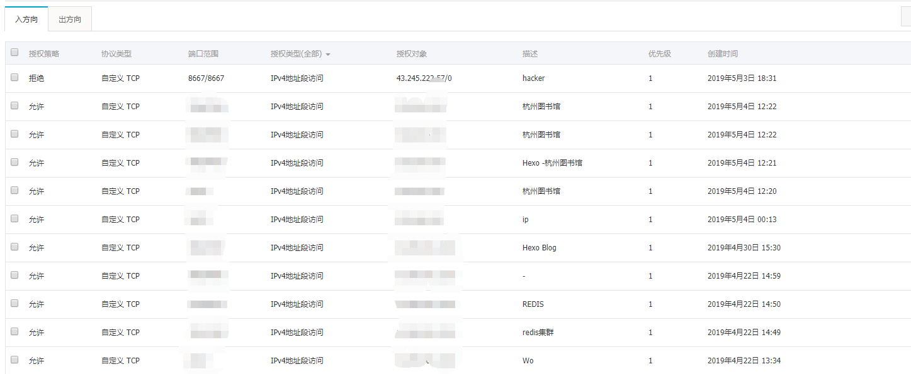

本文为自己的阿里云Linux中挖矿病毒的处理过程以及心得整理
在一天上班的时候，突然收到了阿里的短信，提示正在连接恶意下载源，当时我就。。。  不过那时候的云服务器里没有自己的项目，只有一个dubbo的demo而已。所以我又放了N天，有空了才去看的服务器状况，现在想想真的痛心疾首，挖矿可以，挖出来的得打自己账户不是，虽然只是一个最低配，那四舍五入一下不是一个亿了
不过那时候的云服务器里没有自己的项目，只有一个dubbo的demo而已。所以我又放了N天，有空了才去看的服务器状况，现在想想真的痛心疾首，挖矿可以，挖出来的得打自己账户不是，虽然只是一个最低配，那四舍五入一下不是一个亿了
找病毒
等下班回到家之后，进入阿里云， 发现写指令巨慢，反应很慢，于是使用 命令
1 | $ top -c // 或者使用 top d1 等 查看进程和cpu占用情况 |
发现果然是 CPU占用 100%了， 其中有 大概 这几个 进程 : sysupdate, networkservice, sysguard, update.sh, networks 这几个导致占用99.9% (因为当时没截图，所以大致忘了是哪些了) 。
之后先使用命令kill掉这几个进程 使用top命令已可以看到进程的pid
命令 $ kill -9 [pid] ， 但是发现这样子是没有用的， 因为过几分钟会发现又会启动挖矿程序。
这是因为有病毒的定时任务在启动。
先使用 ps -ef |grep update.sh 或者 使用命令 ls -l /proc/[pid]/exe （kill 掉进程之前） 来查看
这几个文件的路径，会找到这几个文件的路径在
1 | /etc/networkservice |
查看update.sh 会发现大概这么些内容
大体就是会从 这个ip下载病毒使用的所有的文件，然后就可以顺藤摸瓜找出所有文件的路径。
另外应习惯性的找一下 /tmp 目录下的文件看看有没有一些可疑的文件，像我找了一下，发现了几个文件也是和病毒相关的
上面的应该是几个日志文件, kow983kd 貌似是类似的后门，里面都是源代码了（要是有哪个大哥有研究的话也请麻烦补充一下）
解决病毒 ( 两种方式)
删除病毒
之前会发现在 kill -9 之后还会有定时任务再跑，所以之前的一次kill , 我们只是做一次准备任务: 去找出所
有病毒所在的位置。这几分钟之内，你的命令速度为正常的，现在去查看定时任务 cat /var/spool/cron/root
或者crontab -l 命令,会发现有一个定时任务 
删除掉定时任务 执行命令
1 | rm -rf /var/spool/cron/root |
如果发现这么看找不到定时任务，则先去看定时任务的日志。 执行命令 less /var/log/[你的日志文件名]
之后按键 shift + g 来到日志的最下端 ，使用 ? +[关键字] 查找病毒 ，像我的话使用 update.sh做查找
发现能找到确实有病毒的定时任务
，之后就可以使用 上面的删除 rm -rf /var/spool/cron/root 去删除定时任务了 (我这边之前是使用cat /var/spool/cron/root 找不到定时任务，之后在看了日志之后 ,再使用一次cat 就能看到日志了，不知道是什么原
因, 迷茫ing)
删掉定时任务之后再删除其他文件
1 | chattr -i /etc/networkservice |
在上面查看 update.sh文件时，发现上面还有 对 .ssh/authorized_keys 添加病毒的公钥，可以让病毒作者自己登陆，所以这个文件也要删除
1 | chattr -i /root/.ssh/authorized_keys |
删除掉这些以及 /tmp 下的那些文件之后，发现之后也没有启动了，问题解决~~
修改病毒
因为找病毒是一个小坑，你不知道你有的时候找的到底全不全，所以这里介绍一下第二种方式，首先我们已经发现了 主要的执行文件了 update.sh 以及其他的 networkservice 文件等，我们先进行删除操作
1 | chattr -i /root/.ssh/authorized_keys |
之后创建一个同名文件，进行 chattr +i 操作，使文件不可变更
1 | cat >> update.sh //内容随便写 |
其他文件也如此操作，这样的话也可以解决目前的这个病毒，因为病毒无法修改这些文件，所以cpu也不会满了，这是第二种方式。其实这个完全可以和第一种方式一起使用，可以先删掉并创建同名文件再chattr +i ， 省的过几分钟CPU就占满。
中病毒之后的反思
由于之前买这个服务器是为了学习用的，买的也是最低配，里面也没什么有用的东西，所以对这个的安全太疏忽了，阿
里云的安全组之前都是配的所有IP都能访问，主要也没想到黑客对我这么一个最低配的服务器都有兴趣，唉。
目前的做法是修改了一下安全组，只有一些特定IP才可以访问。同时还对病毒文件里的 IP端口进行了一波拒绝操作。
不要脸的尝试打一个广告
目前阿里云618有很多云产品的优惠活动，还是很实惠的，感兴趣的可以点击 **以下链接 ** ， 不敢兴趣的要是也能点一下链接就万分感激了。